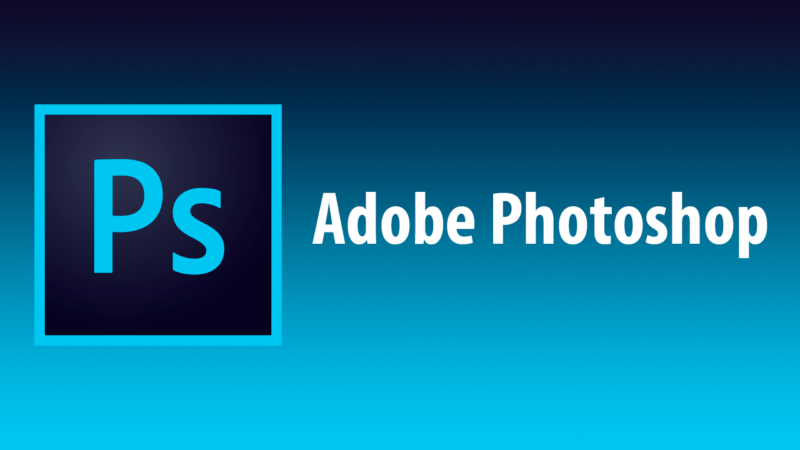

History
- Photoshop was first introduced in 1987 by brothers Thomas and John Knoll.
- In 1988, they sold their license to Adobe, a company that operated photoshop and many other tools like it such as InDesign.
- Until 1996, Thomas Knoll continued to help improve Photoshop with new updates that included color, layers, editing, pen tool, and many other features to make life easier for users.
- Photoshop continues to add new features today, with their last update being in 2017.
- Thanks to Photoshop, users are able to add watermarks to their pictures and edit colors, backgrounds, lighting, blurs. They are also able to add or remove things to their pictures, like James Fridman does.
- Other programs that are all part of the Adobe suite such as InDesign, Illustrator, Dreamweaver are also helpful tools in editing pictures.
